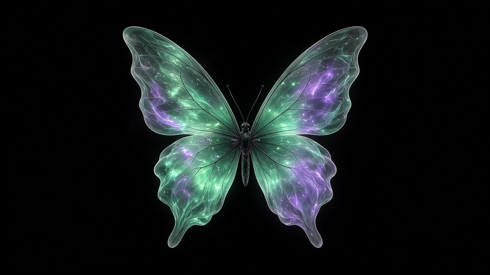

Still — unchanged

Still — mint/violet · different silhouette
Shape locked · light runs body → wing tips · brightness pulses
Hard-refresh (Cmd-Shift-R). Cousin keeps the ethereal glow idea but is a different asset (mint/violet, different wing shape) so it isn’t a 1:1 copy.